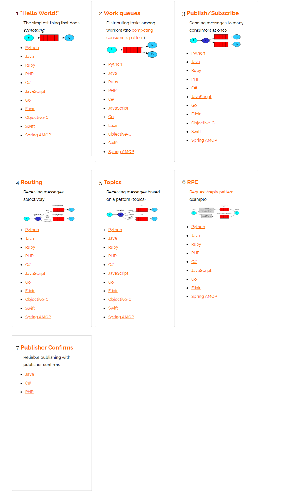
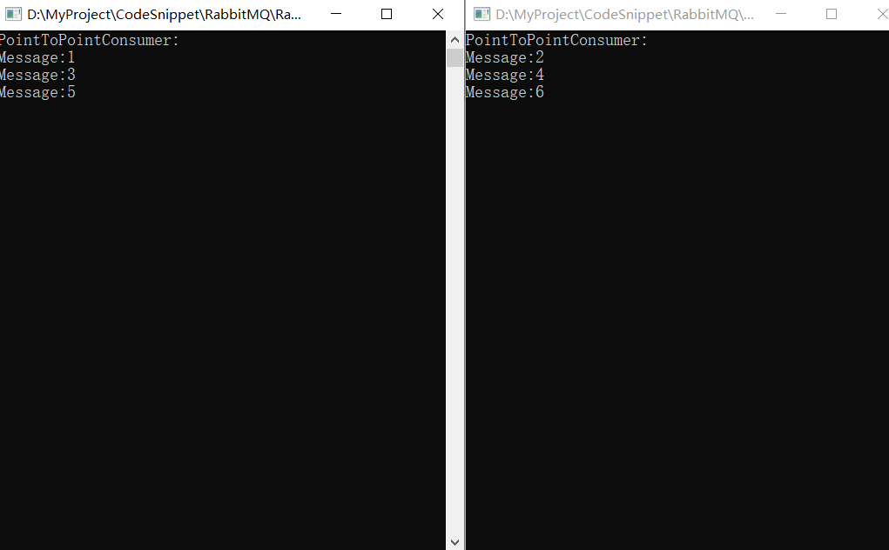
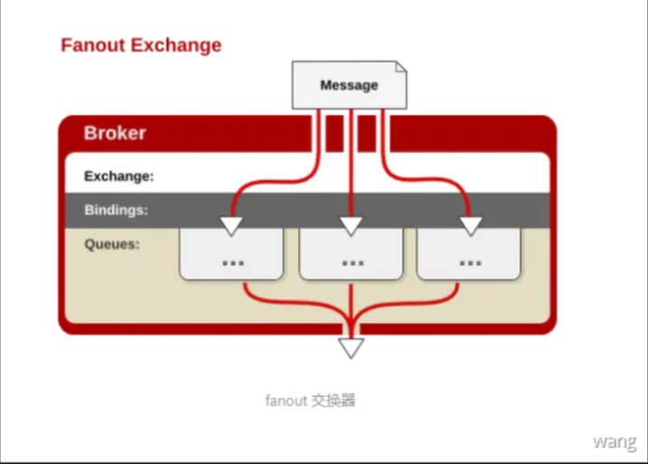
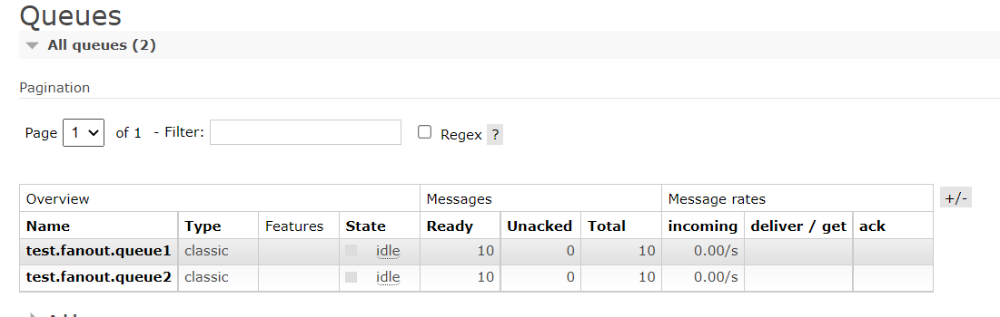
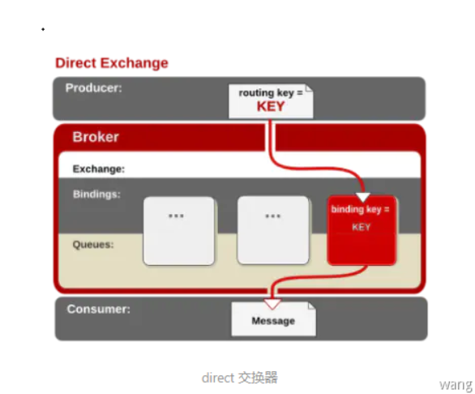
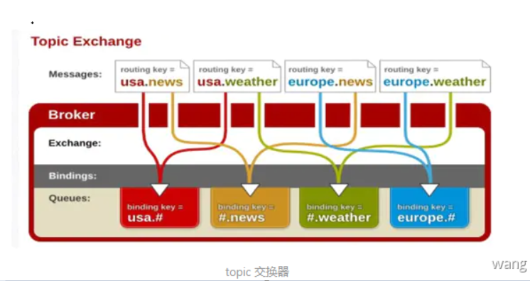
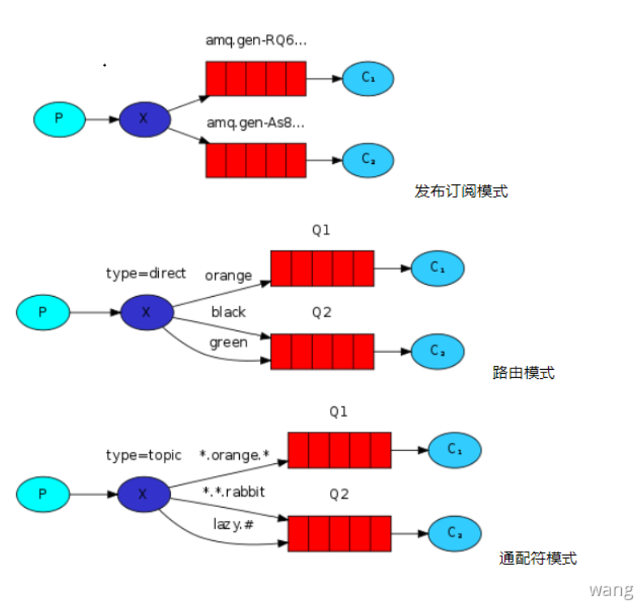

C#创建RabbitMq连接
1 2 3 4 5 6 7 8 9 10 11 12 13 14 15 16 17 18 19 20 21 22 23 24 25 26 namespace RabbitMQPublisher { using System; using RabbitMQ.Client; public static class BasePublisher { public static ConnectionFactory CreateRabbitMqConnection ( { return new ConnectionFactory() { HostName = "localhost" , UserName = "guest" , Password = "guest" , AutomaticRecoveryEnabled = true , RequestedHeartbeat = new TimeSpan(5000 ) }; } } }
工作模式
Rabbitmq的几种工作模式，具体可参考官网给出的Demo：https://www.rabbitmq.com/getstarted.html， RPC 模式类似常用的请求-响应模式，这里不过多解释，感兴趣可以参考官网文档：https://www.rabbitmq.com/tutorials/tutorial-six-dotnet.html。 这里只学习其中的1-5种，也可以分类成两种：不使用交换机和使用交换机。
其实还是使用了交换机的，简单队列和work模式是绑定到了默认的 AMQP default。只不过没有显式声明和绑定而已

简单队列
“ P”是生产者，“ C”是消费者。中间的框是一个队列-RabbitMQ代表保留的消息缓冲区，这个模式很简单，其实就是只有一个消费者，简单的保证操作的顺序性
1 2 3 4 5 6 7 8 9 10 11 12 13 14 15 16 17 18 19 20 21 22 23 24 25 26 27 28 29 30 31 32 33 34 35 36 namespace RabbitMQPublisher { using RabbitMQ.Client; using System; using System.Text; internal static class PointToPointPublisher { readonly static string queueName = "test.pointToPoint.queue" ; private static void Main (string [] args { while (true ) { Console.WriteLine("消息发布者:模式{点对点}=>输入消息内容" ); string message = Console.ReadLine(); if (!string .IsNullOrEmpty(message)) { ConnectionFactory factory = BasePublisher.CreateRabbitMqConnection(); using IConnection connection = factory.CreateConnection(); using IModel channel = connection.CreateModel(); channel.QueueDeclare(queueName, false , false , false , null ); channel.BasicPublish(exchange: "" , routingKey: queueName, basicProperties: null , body: Encoding.UTF8.GetBytes(message)); } } } } }
默认的传统队列是：发布者发布消息，只有一个消费者消费。但是如果消费者多开默认采用轮询(均摊)机制。
均摊消费，如果每个消费者速度不一样的情况下，均摊消费是不公平的，应该是能者多劳

Worker
Worker模式是一对多的模式，但是这个一对多并不是像发布订阅那种，而是将消息顺序传输给每个接收者。其实就是简单队列模式下的消费者多开
ExchangesType
Exchange分发消息时根据类型的不同分发策略有区别：direct、fanout、topic、headers 。headers 匹配 AMQP 消息的 header 而不是路由键，此外 headers 交换器和 direct交换器完全一致，但性能差很多，目前几乎用不到了，所以直接看另外三种类型。
Fanout
发布订阅模式(fanout)，消息发送到Exchange，所有订阅了当前Exchange的Queue都可以收到消息。fanout 交换器不处理路由键，只是简单的将队列绑定到交换器上 。每个发到 fanout 类型交换器的消息都会分发到所有绑定的队列上去。很像子网广播，每台子网内的主机都获得了一份复制的消息。fanout 类型转发消息是最快的

生产者
1 2 3 4 5 6 7 8 9 10 11 12 13 14 15 16 17 18 19 20 21 22 23 24 25 26 27 28 29 30 31 32 33 34 35 36 37 38 39 40 41 42 43 44 45 46 47 48 49 50 51 52 namespace RabbitMQPublisher { using EasyNetQ; using RabbitMQ.Client; using System; using System.Text; internal static class FanoutPublisher { private static void Main (string [] args { while (true ) { Console.WriteLine("消息发布者:模式{fanout}=>输入消息内容" ); string message = Console.ReadLine(); if (!string .IsNullOrEmpty(message)) { ConnectionFactory factory = BasePublisher.CreateRabbitMqConnection(); using IConnection connection = factory.CreateConnection(); using IModel channel = connection.CreateModel(); string exchangeName = $"test.exchange.fanout" ; channel.ExchangeDeclare(exchange: exchangeName, type: "fanout" ); string queue1 = "test.fanout.queue1" ; channel.QueueDeclare(queue1, false , false , false , null ); string queue2 = "test.fanout.queue2" ; channel.QueueDeclare(queue2, false , false , false , null ); channel.QueueBind(queue: queue1, exchange: exchangeName, routingKey: "fanout" ); channel.QueueBind(queue: queue2, exchange: exchangeName, routingKey: "" ); channel.BasicPublish(exchange: exchangeName, routingKey: "" , basicProperties: null , body: Encoding.UTF8.GetBytes(message)); } } } } }

这里虽然绑定 q1 时指定了 routingkey="fanout" 但是q1/q2 都正常收到了消息，证实上面说的“fanout 交换器不处理路由键”。
消费者
1 2 3 4 5 6 7 8 9 10 11 12 13 14 15 16 17 18 19 20 21 22 23 24 25 26 27 28 29 30 31 32 33 34 35 36 37 38 39 40 41 42 43 44 45 46 47 48 49 50 51 52 53 namespace RabbitMQConsumer { using RabbitMQ.Client; using RabbitMQ.Client.Events; using System; using System.Text; internal static class FanoutConsumer { private static void Main (string [] args { Console.WriteLine("input queueName..." ); var input = Console.ReadLine(); ConnectionFactory factory = BaseConsumer.CreateRabbitMqConnection(); using IConnection connection = factory.CreateConnection(); using IModel channel = connection.CreateModel(); EventingBasicConsumer consumer = new (channel); channel.BasicQos(0 , 1 , false ); switch (input) { case "1" : channel.BasicConsume(queue: "test.fanout.queue1" , autoAck: false , consumer: consumer); consumer.Received += (model, message) => { Console.WriteLine($"Message:{Encoding.UTF8.GetString(message.Body.ToArray())} " ); channel.BasicAck( deliveryTag: message.DeliveryTag, multiple: false ); }; Console.ReadLine(); break ; case "2" : channel.BasicConsume(queue: "test.fanout.queue2" , autoAck: false , consumer: consumer); consumer.Received += (model, message) => { Console.WriteLine($"Message:{Encoding.UTF8.GetString(message.Body.ToArray())} " ); channel.BasicAck( deliveryTag: message.DeliveryTag, multiple: false ); }; Console.ReadLine(); break ; } } } }
Direct
direct跟fanout的区别在于多了routekey，消息发送到Exchange，所有订阅了当前Exchange并且routingKey完全匹配的Queue才可以收到消息。消息中的路由键（routing key）如果和 Binding 中的 binding key 一致，交换器就将消息发到对应的队列中。路由键与队列名完全匹配，如果一个队列绑定到交换机要求路由键为“dog”，则只转发 routing key标记为“dog”的消息，不会转发“dog.puppy”，也不会转发“dog.guard”等等。它是完全匹配、单播的模式。

1 2 3 4 5 6 7 8 9 10 11 12 13 14 15 16 17 18 19 20 21 22 23 24 25 26 27 28 29 30 31 32 33 34 35 36 37 38 39 40 41 42 43 44 45 46 47 namespace RabbitMQPublisher { using System; using System.Text; using RabbitMQ.Client; static class DirectPublisher { static void Main (string [] args { while (true ) { Console.WriteLine("消息发布者:模式{direct}=>输入消息内容" ); string message = Console.ReadLine(); if (!string .IsNullOrEmpty(message)) { ConnectionFactory factory = BasePublisher.CreateRabbitMqConnection(); using var connection = factory.CreateConnection(); using var channel = connection.CreateModel(); string exchangeName = $"test.exchange.direct" ; channel.ExchangeDeclare(exchange: exchangeName, type: "direct" ); string queue1 = "test.direct.queue1" ; channel.QueueDeclare(queue1, false , false , false , null ); string queue2 = "test.direct.queue2" ; channel.QueueDeclare(queue2, false , false , false , null ); channel.QueueBind(queue: queue1, exchange: exchangeName, routingKey: "fanout" ); channel.QueueBind(queue: queue2, exchange: exchangeName, routingKey: "" ); channel.BasicPublish(exchange: exchangeName, routingKey: "fanout" , basicProperties: null , body: Encoding.UTF8.GetBytes(message)); } } } } }
Topic
topic符模式与路由模式一致，只不过通配符模式中的路由可以声明为模糊查询，RabbitMQ拥有两个通配符；topic 交换器通过模式匹配分配消息的路由键属性，将路由键和某个模式进行匹配，此时队列需要绑定到一个模式上。它将路由键和绑定键的字符串切分成单词，这些单词之间用点隔开。它同样也会识别两个通配符：符号 # 和符号 *。# 匹配0个或多个单词，* 匹配一个单词

注意：RabbitMQ中通配符并不像正则中的单个字符，而是一个以“.”分割的字符串，如 ”topic1.*“匹配的规则以topic1开始并且"."后只有一段语句的路由。例：“topic1.aaa”，“topic1.bb ”
1 2 3 4 5 6 7 8 9 10 11 12 13 14 15 16 17 18 19 20 21 22 23 24 25 26 27 28 29 30 31 32 33 34 35 36 37 38 39 40 41 42 43 44 45 46 47 48 49 50 51 52 53 54 55 56 57 58 59 60 61 62 namespace RabbitMQPublisher { using System; using System.Text; using RabbitMQ.Client; static class TopicPublisher { static void Main (string [] args { while (true ) { Console.WriteLine("消息发布者:模式{topic}=>输入消息内容" ); string message = Console.ReadLine(); if (!string .IsNullOrEmpty(message)) { ConnectionFactory factory = BasePublisher.CreateRabbitMqConnection(); using var connection = factory.CreateConnection(); using var channel = connection.CreateModel(); string exchangeName = $"test.exchange.topic" ; channel.ExchangeDeclare(exchange: exchangeName, type: "topic" ); string queue1 = "test.topic.queue1" ; channel.QueueDeclare(queue1, false , false , false , null ); string queue2 = "test.topic.queue2" ; channel.QueueDeclare(queue2, false , false , false , null ); channel.QueueBind(queue: queue1, exchange: exchangeName, routingKey: "topic.*" ); channel.QueueBind(queue: queue2, exchange: exchangeName, routingKey: "topic.#" ); #if debug channel.BasicPublish( exchange: exchangeName, routingKey: "topic.test" , basicProperties: null , body: Encoding.UTF8.GetBytes(message)); #endif channel.BasicPublish( exchange: exchangeName, routingKey: "topic.test.test" , basicProperties: null , body: Encoding.UTF8.GetBytes(message)); } } } } }
发布,路由,通配符这三种模式可以算为一种模式，区别仅仅是交互机类型不同.发送者将消息发送发送到交换机，接收者创建各自的消息队列绑定到交换机。

Mandatory参数
注意：channel.BasicPublish()，mandatory 参数指定交换器无法根据自身类型和路由键找到一个符合条件的队列时的处理方式。
true：RabbitMQ会调用Basic.Return命令将消息返回给生产者 false：RabbitMQ会把消息直接丢弃
1 2 3 4 5 6 7 8 9 10 11 12 13 14 15 16 17 18 19 20 21 22 23 24 25 26 27 internal static class PointToPointPublisher { readonly static string queueName = "test.pointToPoint.queue" ; private static void Main (string [] args { while (true ) { Console.WriteLine("消息发布者:模式{点对点}=>输入消息内容" ); string message = Console.ReadLine(); if (!string .IsNullOrEmpty(message)) { ConnectionFactory factory = BasePublisher.CreateRabbitMqConnection(); using IConnection connection = factory.CreateConnection(); using IModel channel = connection.CreateModel(); #if mandatory channel.QueueDeclare(queueName, false , false , false , null ); #endif channel.BasicPublish(exchange: "" , routingKey: queueName, basicProperties: null , body: Encoding.UTF8.GetBytes(message)); } } } }
这里发送消息时rabbitMq 中并没有名称为 test.pointToPoint.queue 的队列，这里没有设置 mandatory 参数所以消息会默认被丢弃，可以使用BasicReturn 来获取没有正常发送到队列中的消息。
1 2 3 4 5 6 7 8 channel.BasicPublish(exchange: "" , routingKey: queueName, basicProperties: null , body: Encoding.UTF8.GetBytes(message), mandatory: true ); channel.BasicReturn += (sender, message) => { Console.WriteLine(Encoding.UTF8.GetString(message.Body.ToArray())); };
Exchange：AMQP default
Default exchange：
The default exchange is implicitly bound to every queue, with a routing key equal to the queue name. It is not possible to explicitly bind to, or unbind from the default exchange. It also cannot be deleted.
译：默认交换器隐式地绑定到每个队列，其路由键等于队列名 。 不可能显式地绑定到默认交换，或从默认交换取消绑定。 也不能删除。
这里是说每个 queue 都会默认绑定到这个AMQP default 这个交换器，不能显式手动绑定也不能解绑或者删除。
1 2 3 4 5 channel.BasicPublish(exchange: "" , routingKey: "test.pointToPoint.queue" , basicProperties: null , body: Encoding.UTF8.GetBytes(message));
这里发布消息时没有指定 exchange，队列名称就是routingKey。
Qos机制
当生产者将消息发布到rabbitmq之后，如果在未配置 QOS 的情况下，rabbitmq尽可能快速地发送队列中的所有消息到消费者端，如果消息比较多，消费者来不及处理，就会缓存这些消息，当消息堆积过多，可能导致服务器内存不足而影响其他进程，rabbitmq的QOS可以很好的解决这类问题，QOS 就是限制消费者一次性从rabbitmq中获取消息的个数，而不是获取所有消息。比如设置rabbitmq的QOS为10，也就是 prefetch=10 ，就是说哪怕rabbitmq中有100条消息，消费者也只是一次性获取10条，然后消费者消费这10条消息，剩下的交给其他消费者，当10条消息中的 unacked 个数少于prefetch * 消费者数目时，会继续从rabbitmq获取消息，如果在工作模式中，不使用QOS，你会发现所有的消息都被一个消费者消费了。